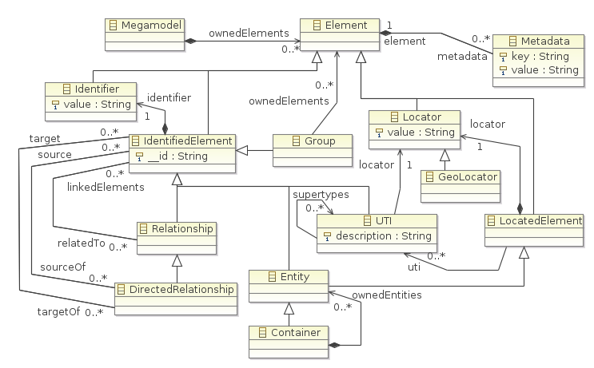

Metamodeling task
The metamodeling step is a work of specification of the user's domain over the
cartography metamodel. Three cases are relevant:
- the Cartography core metamodel can be used as-is by customers, who
will then build the discovery tools and generate the central model using the
core types (see the first figure below);
- it may also be extended by an engineer (the Cartography
Designer role) to carry types closer to the user domain, these specific
types relying to the core ones by inheritance; in this case, the
metamodeling initial step consists in catching the concepts underlying the
user domain and drawing the corresponding metamodel extension over the
cartography core metamodel; each kind of element within the system under
study needs to be identified, giving the corresponding type; the resulting
types of the metamodel extension define a DSL which enables corresponding
tooling, transformations and modeling of the domain; such a DSL is visible in
second figure below;
- an existing metamodel of the domain could also be reused as soon as
inheritance to cartography core metamodel types is added to its types; we
have to remark that the relations between elements which were defined by
references need to be reified within explicit types in order to inherit from
(
Directed)\Relationship core type;
